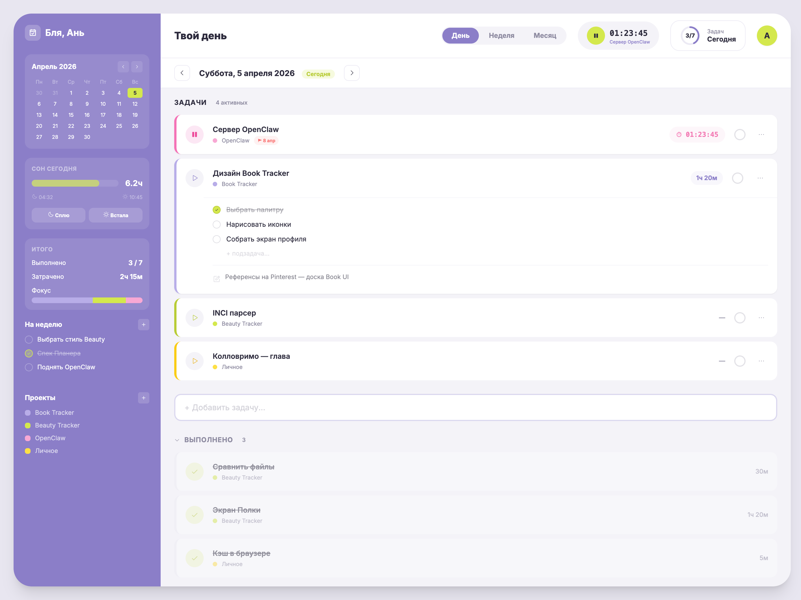
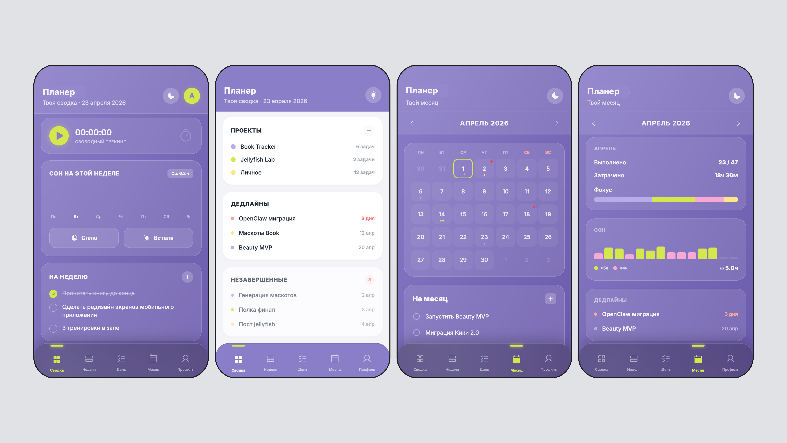
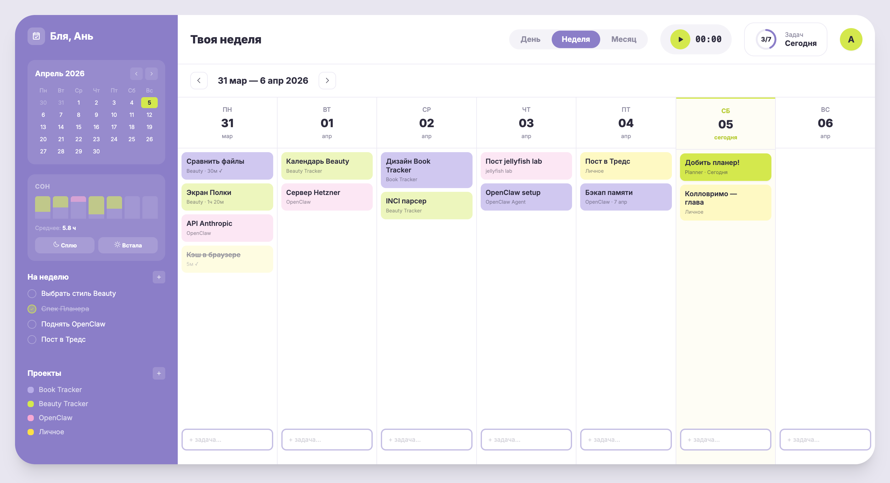
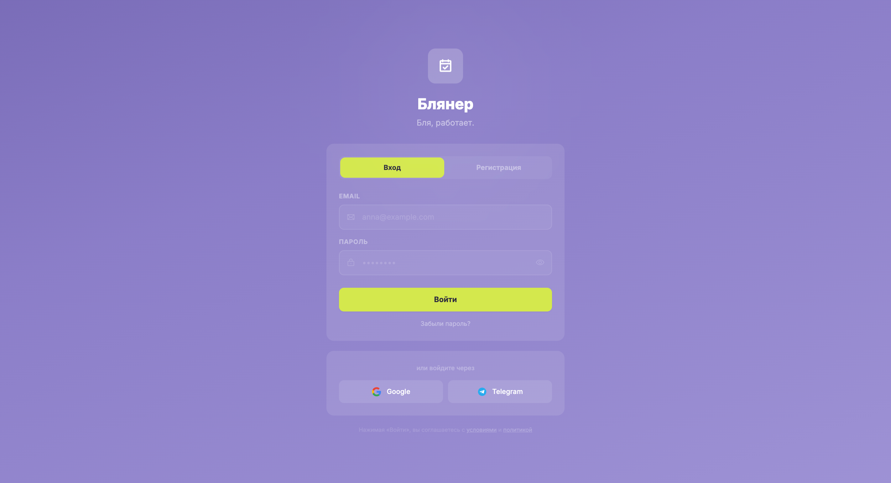
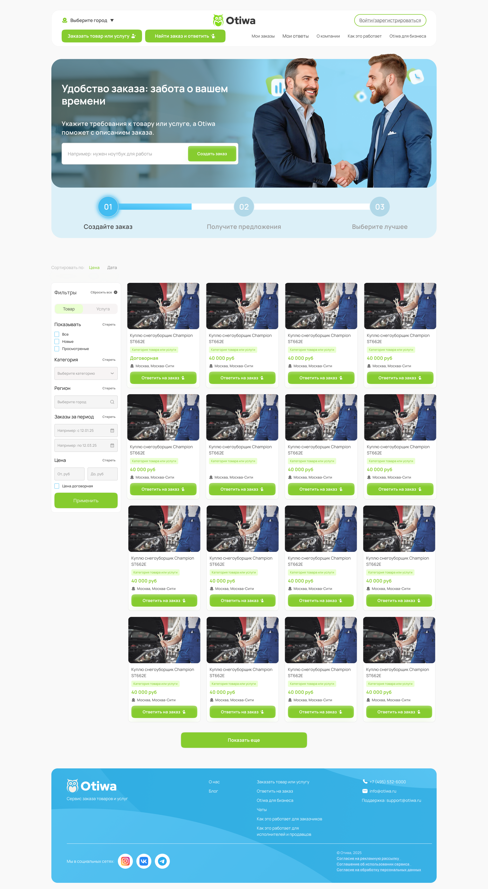
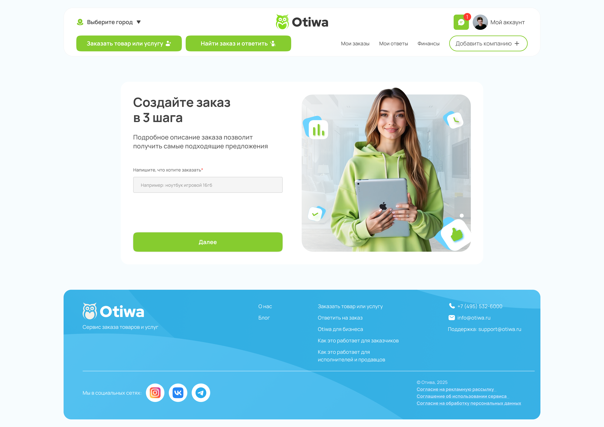
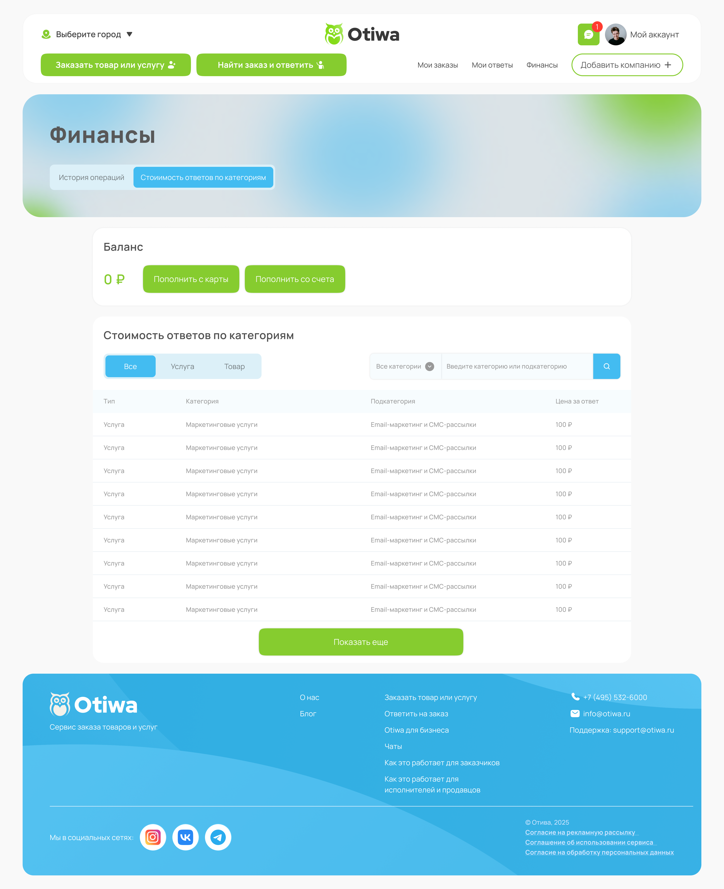

Linguist turned Project Manager & UI/UX Designer. Я не просто рисую красивые картинки — я выстраиваю логику, собираю архитектуру и продумываю пользовательский путь от первого клика до финального результата.
Ультимативный таск-трекер для хаоса. Продукт, который объединяет трекинг сна, тайм-менеджмент и Канбан в одном "атомарном" интерфейсе.




Блянер (Planner) был задуман как инструмент для людей с СДВГ и тех, кому сложно удерживать фокус в стандартных таск-трекерах. Главная задача состояла в том, чтобы убрать когнитивную перегрузку и объединить задачи с трекингом физического состояния (сон).
Я разработала концепцию атомарного UI, где левый сайдбар работает как постоянный дашборд (показывая сон, прогресс и навигацию), а центральная область переключается между фокус-режимом одного дня и канбан-доской на неделю. Интерфейс построен на контрасте мягкого лавандового фона (#9A90DA) и кислотно-лаймовых акцентов для удержания внимания.
Управление разработкой крупного сервиса заказа товаров и услуг. Полный цикл продакт-менеджмента от ТЗ до релиза.



Разработка сложного двухстороннего маркетплейса (пользователи и исполнители). Проект требовал глубокого погружения в бизнес-логику: от системы формирования заказов до сложного финансового модуля со стоимостью ответов по разным категориям.
В этом проекте я выступала в роли Product/Project Manager. Моя главная задача — перевести требования заказчика на язык разработки, составить исчерпывающее техническое задание и довести продукт до успешного релиза в срок.